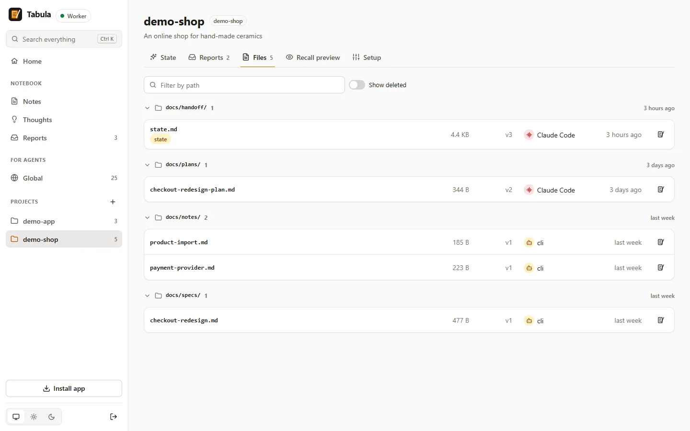

Project memory
The tabula command mirrors a repository's untracked files (handoff state, private specs and plans) with tabula push and tabula pull, and a SessionStart hook restores them in a fresh clone. Two machines editing the same file get a conflict, not a silent overwrite.
At the start of a session Claude calls recall once and gets the global rules, the project state and the newest files within 3 000 tokens. When the digest has to be trimmed, Tabula warns you, and one click copies instructions that make Claude move finished history to an archive file.
